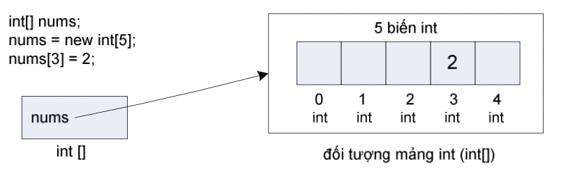
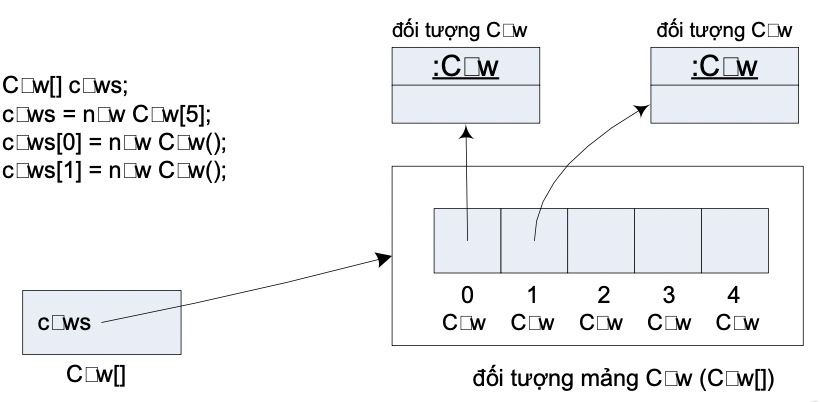
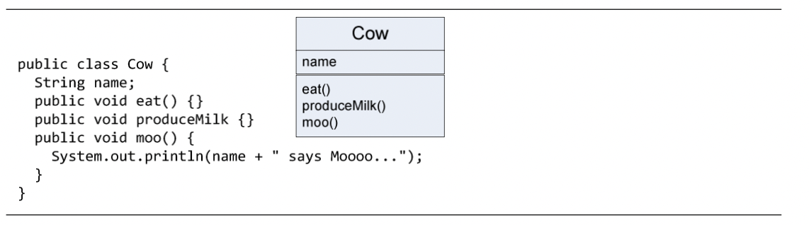
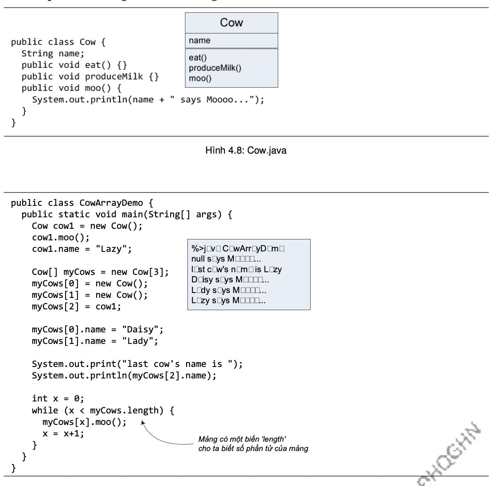

Về mặt hình tượng, mảng (array) là một chuỗi các biến thuộc cùng một loại được đánh số thứ tự. Ví dụ một mảng int kích thước 5 là một chuỗi liên tục 5 biến kiểu int được đánh số thứ tự từ 0 tới 4. Một mảng Java thực chất là một đối tượng. Một biến mảng là tham chiếu tới một đối tượng mảng.
Ví dụ:
int[] nums;
nums = new int[5];
nums[3] = 2;
Lệnh thứ nhất khai báo biến tham chiếu nums kiểu mảng int (int[]). Nó sẽ là cái điều khiểu từ xa của một đối tượng mảng. Lệnh thứ hai tạo một mảng int với độ dài 5 và gắn nó với biến nums đã được khai báo trước đó. Lệnh thứ ba gán giá trị 2 cho phần tử có chỉ số 3 trong mảng.
Hình 4.6. Tham chiếu và đối tượng mảng int
Ví dụ trên minh họa mảng gồm các phần tử kiểu cơ bản. Mỗi phần tử mảng kiểu int là một biến kiểu int. Vậy còn mảng Cow hay mảng String thì sao? Cũng y hệt như vậy, mảng Cow chứa các biến kiểu Cow, nghĩa là các tham chiếu đối tượng Cow (cái điều khiển từ xa chứ không phải bản thân đối tượng Cow).
Hình 4.7. Tham chiếu và đối tượng mảng Cow.
Tóm lại, mảng có thể được khai báo để chứa các phần tử thuộc kiểu cơ bản hoặc kiểu tham chiếu đối tượng. Tùy theo mảng được khai báo kiểu dữ liệu gì thì chứa các phần tử là biến thuộc kiểu dữ liệu đó. Tuy nhiên, dù các phần tử thuộc kiểu cơ bản hay tham chiếu đối tượng thì bản thân mỗi mảng là một đối tượng, và biến mảng là tham chiếu tới đối tượng mảng.
Thao tác đối với các phần tử mảng kiểu Cow có khác gì với việc thao tác một biến kiểu Cow? Ta cũng dùng toán tử (.) như bình thường, nhưng vì phần tử mảng không có tên biến, thay vào đó, ta dùng kí hiệu phần tử của mảng. Ví dụ, với lớp Cow được định nghĩa như trong Hình 4.8, ta dùng các tham chiếu mảng để thao tác với các phần tử mảng Cow như trong Hình 4.9.
Hình 4.8: Cow.java
Hình 4.9: CowArrayTest.java
Ta thường dùng vòng for để duyệt các phần tử của một mảng. Ví dụ, đoạn mã duyệt mảng myCows và in ra tên của từng con bò trong đó có thể được viết như sau:
for (int x = 0; x < myCows.length; x++) {
System.out.println(myCows[x].name);
}
Ngoài cú pháp thông dụng như ở trên, vòng for duyệt mảng còn có một cách viết ngắn gọn hơn, đó là vòng for-each. Ví dụ, ta có thể viết lại vòng for trên như dưới đây:
for (Cow aCow : myCows {
System.out.println(aCow.name);
}
Trong đó, ta khai báo biến chạy aCow là biến kiểu Cow, biến chạy sẽ chạy từ đầu đến cuối mảng myCows, mỗi lần lại lấy giá trị bằng giá trị của phần tử hiện tại trong mảng (trong ví dụ này, giá trị đó là một tham chiếu tới một đối tượng Cow).
Vòng for-each có thể áp dụng cho mảng thuộc kiểu dữ liệu tham chiếu cũng như kiểu cơ bản, ngoài ra còn dùng được cho các cấu trúc collection của thư viện Java mà ta sẽ nói đến trong Chương 13.